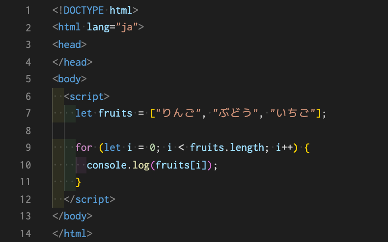
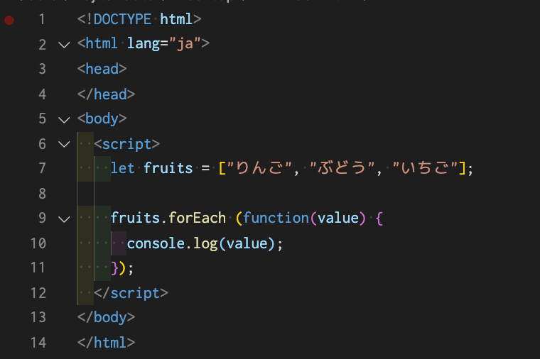

for文の記述方法
for (let i = 0; i < 5; i++) { 実行内容の記述 }
このようにセミコロン（;）で区切られた3つのブロックで構成されています。
サンプルプログラムを載せておきます。皆さんも実践してみてください。
実行結果として、「りんご、ぶどう、いちご」がコンソールに表示されたと思います。
配列は、fruits[0]のような形で、インデックスに整数を指定して値を出力することができると前回紹介しました。for文は、カウンタiを0から1ずつ加算するため、配列の値を全て出力するプログラムに最適化されています。 また、2つ目のブロックで fruits.length の形で繰り返し回数を指定しています。これも決まった形ですので、覚えてしまうと良いでしょう。このように指定する理由は、配列は fruits[5] のように、本来の長さを超えるインデックス値を指定した場合にはエラーになってしまうためです。もちろん（i < 3）と指定しても動作はするのですが、配列の「length」プロパティを使うと自動的に配列の大きさを取得できるので、この指定方法の方が効率が良いというわけです。
では、forEachの基本的な使い方について見ていきましょう。主に、一般的な構文や書き方などから例も交えて紹介していきます。
let array = [配列データ];
array.forEach(function(value){ ここに処理内容を記述 });
一般的な使い方としては、配列.forEach( 処理 )のように配列データに対してforEachを実行します。forEachは、配列データの値1つずつに対して{}内に記述した処理を実行することができます。 （）内には、いくつか引数を受けとることが可能であり、これにより簡単な繰り返し処理を実現しております。
では、簡単な練習として一般的な配列データをループさせながら中身の要素を取得してみましょう。
コンソールで確認すると、「りんご、ぶどう、いちご」が表示されていると思います。
このプログラムは、果物の名称が格納された配列「fruits」を使い、それぞれの名称をconsole.log()で表示するという内容です。無名関数の引数としてvalueを設定していますが、このvalueという変数に配列の値となる果物の名称が1つずつ代入されるようになります。 for文と違って、繰り返し回数やカウンタ変数などをまったく意識せずに扱えるので、非常にシンプルにコードが書けているのが特徴です。
もう少し複雑な配列に挑戦してみましょう。 次のプログラムは、配列の中にオブジェクトを格納したものになります。

forEachは、無名関数の引数valueに、配列の値が1つずつ代入される構文とご紹介しました。今回の場合、配列の値がオブジェクトになっているので、そのキーとなるnameを直接指定すれば果物の名称が1つずつ取得でき、priceを指定すればそれぞれの金額を取得することができます。